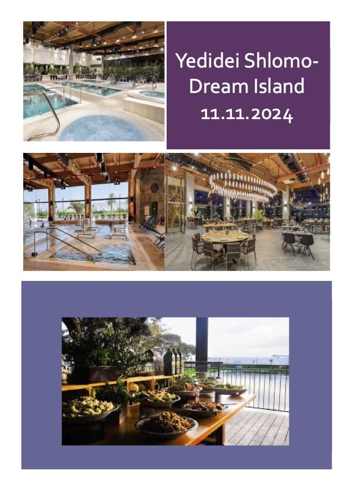
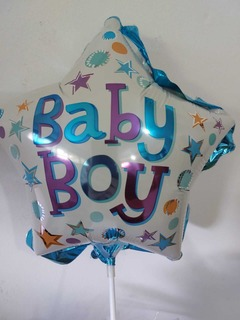
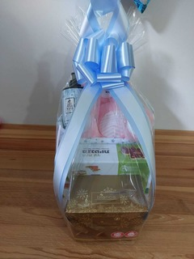
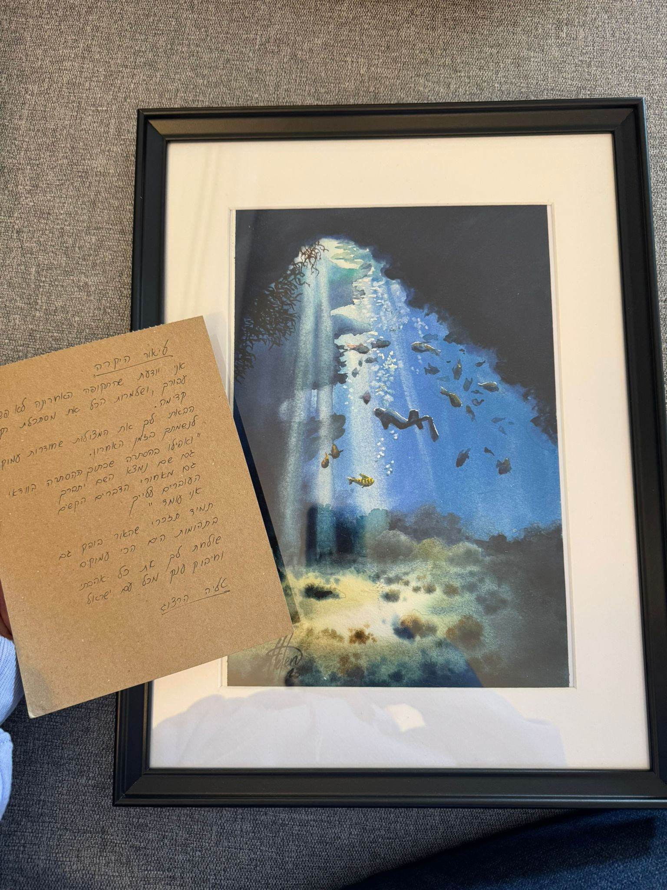

ידידי שלמה היא עמותה רחבת לב המוקדשת למתן תמיכה רגשית, חברתית, פיננסית ומעשית לאלמנות חללי צה"ל.
מטרתנו לעמוד לצד נשים אלו, להציע סיוע במקומות שבהם אחרים לא יכולים, ולהבטיח שהן לא תרגשנה לבד במסען.
המטרה שלנו
כשחייל צה"ל נופל במלחמה, קורבן זה לרוב משאיר אחריו אלמנה—ולעיתים גם ילדים קטנים. לאלמנות בהריון, הצער הבלתי נתפס מתלווה לאתגר המתוק-מר של קבלת חיים חדשים תוך כדי אבל על האובדן.
כל סיפור של אלמנה הוא ייחודי, וכך גם הצרכים שלהן. בין אם מדובר בתמיכה רגשית, סיוע פיננסי או תמיכה מעשית, ידידי שלמה מציעה עזרה מותאמת אישית על מנת להעניק תקווה, כוח ויוקרה בשעות הקשות ביותר שלהן.
ההישגים שלנו בשנת 2024
מאז פרוץ מלחמת חרבות ברזל, עמותת ידידי שלמה הרחיבה משמעותית את השפעתה ותחום פעולתה.
מה שהחל כמאמץ צנוע לסייע לכמה אלמנות, הפך לקהילה של יותר מ-100 נשים המקבלות טיפול ותמיכה מותאמת אישית.
הישגים בולטים לשנה זו:
הפצת כרטיסי מתנה לחגים, תוך מתן תחושת שמחה ונחמה בעונות החג.
הענקת מתנות לאלמנות שילדו תינוקות.
הפצת מתנות יום הולדת לאלמנות ולילדיהן, כדי להזכיר להן שהן מוערכות.
ארגון רשת מתנדבים לסיוע בבייביסיטר, משימות בית ועוד.
יום פינוק וריפוי בספא "אי החלומות" עבור 40 נשים. האירוע כלל טיפולים מרגיעים, חוויות קולינריות ושעה של רוגע והפוגה מאתגרים יומיים.
סיפורים מהלב - אלמנות מספרות
הפעילות בדרים איילנד סיכמה שנה של עשייה, חיבור האלמנות יחד לעזרה בהתמודדות, וליום שכולו רוגע לגוף ולנפש. הנה טעימה קטנה מהתגובות שקיבלנו:
"היה מדהים ומפנק מאוד. תודה רבה❤"
- הדר
"המון תודה כל הכל. מאוד נהנתי!❤"
- מרינה
"תודה רבה על הארגון וההשקעה!!!. היה דרוש ונעים❤"
- עדי
"תודה רבה על יום מפנק וממלא. בטוחה שעבדת ללא הפסקה כדי לשמח אותנו! אין כמוכן!!"
- דנה
"תודה רבה על כל ההשקעה, כל כך לא מובן מאליו!"
- סתיו
"יום בלתי נשכח בדרים איילנד, מלא בחיוכים וזיכרונות טובים."

סרטונים מרגשים
מתנות שנשלחו ליולדת


אלמנה יקרה כתבה לנו כך:
היי טליה, ב-7.10 בעלי נפל כשהייתי בחודש שישי להריון ראשון, ביום ההולדת שלי.
3 חודשים אחרי נולד הבן שלנו. בזמנו לא הייתי במצב נפשי טוב ועשיתי ברית מאוד מצומצמת ומינימלית.
בינואר בני חוגג שנה בעזרת ה' ותכננתי לעשות תיקון לברית ולקיים אירוע יום הולדת ולהזמין את החברים מהצבא שחשוב לי מאוד שיהיו חלק מהאירועים של איתן לאורך חייו.
אני מגיעה לכמות אנשים גדולה ועלויות יחסית גבוהות והייתי שמחה לקבל סיוע במה שאפשר כדי לקיים את האירוע הזה.
תודה רבה מראש ❤
הנה מה שענתה לאחר קבלת העזרה:
זה מדהים אני באמת באמת מעריכה את זה ובכלל גם את ההשקעה שלך והנסיון לעזור, זה לא מובן מאליו ! תודה רבה על העזרה ❤❤❤❤
הנה ציור עם מכתב ששלחנו לאחת האלמנות

התגובה שקיבלנו לאחר קבלת הציור עם המכתב:
יואוווו אין לי מילים.
איזו מדויקת את.
תודה ענקית על המילים הטובות,
את כזאת מדהימה!!!
בחיי שבכל יום אני שואלת את עצמי למה הגיע לי הרע הזה… ורגע אחר כך אני שואלת את עצמי מה עשיתי טוב שמגיע לי להיות עטופה באנשים עם לב כל כך גדול 💛💛💛
Yedidei Shlomo is a compassionate organization dedicated to providing emotional, social, financial, and practical support to widows of IDF soldiers.
Our mission is to stand beside these brave women, offering assistance where others cannot, and ensuring they never feel alone in their journey.
Our Purpose
When an IDF soldier falls in battle, their sacrifice often leaves behind a grieving spouse—and in many cases, young children as well. For pregnant widows, this unimaginable pain is accompanied by the bittersweet challenge of welcoming new life while mourning the loss of a loved one.
Each widow’s story is unique, and so are their needs. Whether it’s emotional encouragement, financial aid, or practical support, Yedidei Shlomo tailors its assistance to offer hope, strength, and dignity during their most difficult times.
Our Achievements in 2024
Since the onset of the Iron Sword War, Yedidei Shlomo has expanded its reach and impact exponentially. What began as a humble effort to assist a few widows has grown into a community of over 100 women receiving personalized care and support.
Highlights of this year's initiatives:
Distributed gift cards to dozens of widows, offering them a sense of joy and relief during festive seasons.
Sent special gifts to widows who welcomed new babies into the world.
Delivered thoughtful birthday presents to widows and their children, reminding them they are cherished.
Coordinated a network of volunteers to assist with babysitting, household tasks, and other practical needs.
Organized an unforgettable day of relaxation at the prestigious "Dream Island" spa for 40 widows, including rejuvenating treatments, gourmet experiences, and a well-deserved escape from daily struggles.
Stories from the Heart - Widows Speak
The activity at Dream Island concluded a year of action, connecting widows to help each other cope, and providing a day full of relaxation for the body and soul. Here's a small taste of the feedback we received:
"It was amazing and so pampering. Thank you so much ❤"
- Hadar
"Thank you so much for everything. I really enjoyed it! ❤"
- Marina
"Thank you for the organization and effort!!! It was much needed and delightful ❤"
- Adi
"Thank you so much for a pampering and fulfilling day. I'm sure you worked tirelessly to make us happy! You're amazing!!"
- Dana
"Thank you for all the effort, it's so appreciated!"
- Stav
"An unforgettable day at Dream Island, filled with smiles and great memories."
Touching Videos
Gifts Sent to New Mothers
A dear widow wrote to us:
Hi Talia, on October 7th, my husband passed away when I was in my sixth month of my first pregnancy, on my birthday. Three months later, our son was born. At that time, I wasn't in a good mental state and held a very small and minimal circumcision ceremony. In January, my son will be one year old, God willing, and I planned to have a circumcision celebration and a birthday party, inviting friends from the army who are very important to me to be part of Eitan's events throughout his life. I am expecting a large number of people and relatively high costs, and I would be grateful for any assistance to make this event happen. Thank you very much in advance ❤
Here's what she said after receiving the help:
This is amazing, I truly appreciate it and also your effort and attempt to help, it's not taken for granted! Thank you so much for the help ❤❤❤❤
Here's a drawing with a letter we sent to one of the widows
The response we received after sending the drawing with the letter:
Wow, I have no words. How accurate you are. Thank you so much for the kind words, you are amazing!!!
Every day I ask myself why this bad thing happened to me... and then I ask myself what I did right to deserve to be surrounded by such big-hearted people 💛💛💛


 שלח דוא"ל
שלח דוא"ל